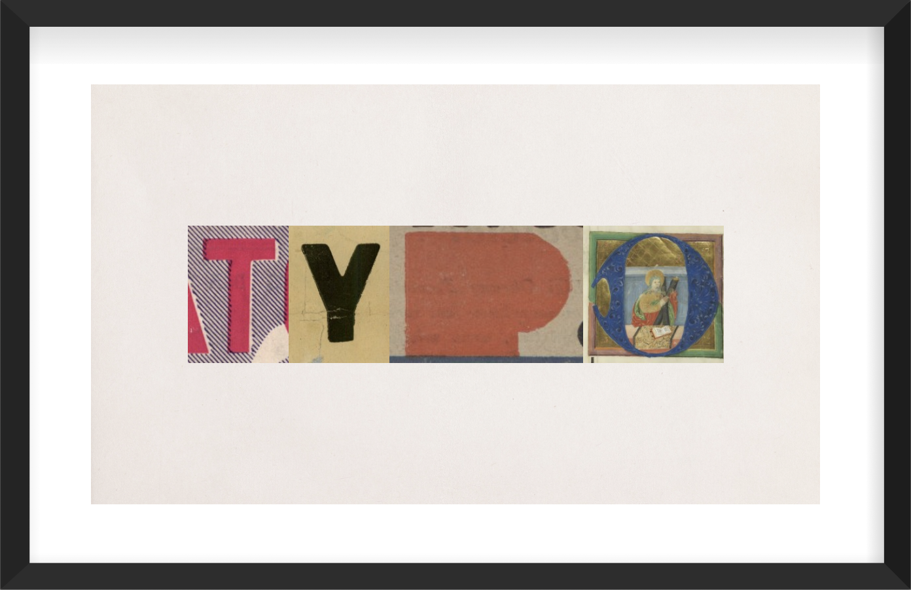
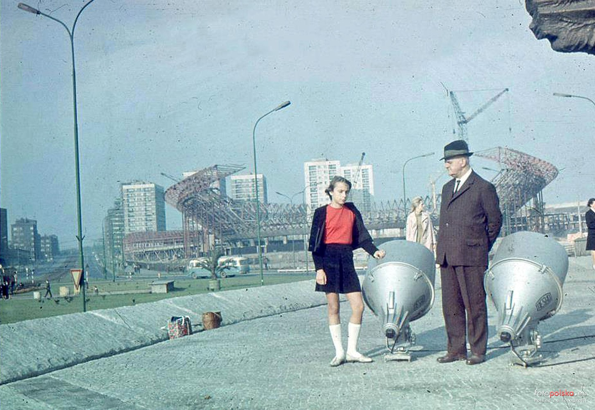

Polona Typo, 31. března 2025
Nejradši jezdím vlakem. Už ani nevím jak jsem se k tomu dostal, ale narazil jsem na řekněme polskou digitální národní knihovnu znaků, písmen chcete-li. Když jsem to viděl poprvé, tak v tom momentu jsem si vybavil Jonathana Hoeflera, v seriálu Abstract: The Art of Design, jak tam chodí po těch hřbitovech a zkoumá písmena na hrobech. Tak tady k těm hrobům můžete přidat digitální knihovnu, která v sobě skrývá řadu písmen ke zkoumání, některá stará šest dekád.
Objevení "tajného" webu, 29. března 2025
Sobota večer, svítí sluníčko a je teplo. Vydali jsme se na procházku do města a zablodili do jedné nápadné hodpůdky, o které jsem měl tušení,že je pro nějaké hráče počítačových her, tak totiž vypadá a podobně se i tak jmenuje. A heleďme se, není to tak! Zajímalo mě jaké tam mají české pivo, když jsem z dálky viděl kofolu. Němeli, žádné které by stálo za srknutí. A když jsme se tak procházeli lokálem, tak jsem si všiml hodně staré, a zato pěkné fotky z 60. let minulého století.
Jde o fotku městského stadionu v katowicích, který slouží fotbalu dodnes, kromě toho také různým koncertům a kulturních akcí. Například v létě se při spodku, před ním odehrává letní kino. Tam půjdem až bude léto. Ale teď se podívejte níže, zpátky k věci!  Přislo mi to zajímavý, a byl jsem zvědavej, v pravém dolním rohu je nápis Foto Polska, tak jsem se zvědavosti začal hledat o co jde, a když jsem to otevřel, byl jsem fascinován. Je to černý web na které vyhledáte nesmírné množství fotek různých baráku, a nebo ulic napříč lety. Obří databáze. Mám to rád, studovat a porozumět městu, jak to bylo, jak to je teď porovnat to se současnoti, porozumět vývoji, souvislostem. Tak jdu na to!Setkani s architektem, 22. Brezna 2025
Sli jsme do parku Kosciuscki, a sli jsme tam na prochazku. A jeste nez jsme se vubec rozhybali, potkali jsme pana se psem. Hned pri prvnim pohledu na nej jsem vedel, ze si s nim budu mit co rict, byl zkratka zajimavej. Umel velmi dobre cesky, a velmi dobre rozumel historii.
Dostali jsme se nejak k Italii, tak jsem rekl, ze se mi libi ty zastavky od toho architekta od Mussoliniho. A v tom to prave zaclo. Polozil mi otazku, jestli studuji architekturu, anebo jsem architekt. A pak se zasmal, a rekl ze je architekt. Dcera pracuje v Milane a je taky architektka, dal jsem mu otazku co si mysli o tom jake to je byt architekt kdysi vs ted. Rekl, ze ji rikal, ze to nema delat. Bavili jsem se dal a dal uplne o vsem, a probrali jsem vsechno. Od pocatku tzv. digitalni architektury, pres valku az po ruzna obdobi. Take o tvoreni bohatstvi napric dekadami, zrejme polsko cesko. Sakramensky dobrej americky prizvuk a libi se mu New York, a moc prej nemusi Washington. Byl jsem totalne fascinovan. Delal navrh na koncertni sal Polske filharmonie, tady v Katowicich, ale nevzali mu ho, rekli neco ve smyslu, ze to je prestrelene, extravagantni nebo neco takoveho, vybirali to muzici. Taky rikal, ze delal budovu polske energetiky. Bylo vtipny, kdyz jsme se dostali k tematu historie vs soucasnost Polsko Cesko. Rikal, ze jel po dalnici, po ceske dalnici, tak to na nej nepusobilo, ze by projizdel nejakou bohatou zemi. To se bavime o tusim dekade pred revoluci. Po tom prevratu udelaly tzv. kupony, a ze najednou jak projizdel po te same dalnici ceskem, tak videl prvni porsche s ceskou spz. Pak jsem se taky dostali k tomu jak se kdysi za socialismu projektovaly baraky, a verejne prostranstvi, ktere s tim samozrejme uzce souvisi, a ma to vliv na vsechno. Na soukromi, rekl bych pocit svobody, to ze vsechno hraje, dostupnost sluzeb. Koneckoncu o tom jsem se sepsal nize, jak tady vypadaji sidliste. Sidliste Paderewskiego, tady na Trzech Stawow je ukazkovy priklad kvality. Tak se to ma delat. A presne o tom jsme se bavili. O tom jak to bylo kdysi, historie. Kdysi se myslelo na lidi, a to v takovem smyslu, ze by se jim tam dobre zilo. Jak proste. Dneska ty hodnoty jsou jinde. Spolecnost, massa je masirovana standartne pres novinare, spolecne s dalsimi nevzdelanci a jednoduchymi lidmi na socialnich sitich, kteri rikaj jako mudrci, ze nejake bile kostky to je super a mel by to kazdy koupit. A to je to tema. Zatimco nase baraky, tak maji extremne velkou przestrzen, a clovek i kdyby chtel cumet do oken, tak nema sanci nic videt, tak ty nove co jsou hnedka naproti nikoli. U tech novych se to nedeje, protoze hlavni zajem je vytezit kazdy m2 do plochy do posledniho milimetru, protoze lidi chteji sracku. Chteji mit nejakou zasranou zbytecnou novostavbu, ktera je uplne k nicemu, na prestizni adrese s hezkym vyhledem. Tecka to je vsechno. To, ze ta architektura nema zadno hodnotu je uplne jedno protoze jsou presvedceni o tom, ze to co je nove je dobre a lepsi nez kdysi. Jsou uplne mimo. A tenhle ten stav nazval Financnim Kapitalismem. To se mi libi! A taky rekl jeste jednu krasnou vec – bydleni bylo kdysi bydleni, a ze dneska se stalo komoditou. Konec setkani me prekvapil, Pan rekl, ze se mu s nami mile povidalo, a ze priste se muzem potkat vsichni treba na kafe. Ja byl tak v uzasu, ze jsem jenom kyval hlavou a vubec si nenavrhl vymenu telefonu. Sakra! Pak, kdyz jsem jel nekdy potom z prace, tak jsem do toho parku sel znova, abych ho potkal, ale nepodarilo se. Pevne verim, ze se jeste potkame. Kecali jsme tam ve trech od poledne az do setmeni na chodniku uprostred parku a bylo to mega! Super setkani s velkym clovekem.Prichazeni o prilezitosti, 1. unora 2025
Neni nic horsiho nez kdyz clovek se vedome a zcela dobrovolne ochuzuje o mozne prolezitosti. Kdyz jsem pracoval v bance tak platilo jasne pravidlo – i když se Ti na prvni pohled muze zdat ze z toho nic nebude, nenech se zmast, z kazdeho neco muze byt.
Clovek by si to porad mel pripominat. Myslim si, ze to je lidske, neco si uz dopredu o nekom, necem myslet na zaklade zazitych zkusenosti, analyz, dojmu apod. Ale vsechno to je subjektivni a clovek si tim muze zcela dobrovolne zavirat dvere. Jako dukaz je muj pribeh s hledanim prace v polsku. Zkousel jsem ruzne cesty. Vzdycky uz jenom proto, protoze verim, ze vsechno je o lidech, a take na spriznene duse. Takze jsem to zkousel pres zname, pres osoby co o tom rozhoduji, tak ze jsem si je nasel a naprimo je kontaktoval a rikal, ze pro ne chci delat, a take standartne posilanim zivotopisu vsude, kde se da. Ale vysledky nula. Ne defacto, ale na nic to nevypadalo, vsechno pofiderni, i kdyz to mozna na prvni pohled vypadalo dobre. Az v tom najednou prisla pritelkyne a rekla mi o necem co se jmenuje talent days, je to takovy veletrh prace, ktery se kona po celem polsku kazdorocne. Je to presne takovy ten veletrh, u ktereho si reknete, ze to je uplne mimo. Jsou tam takove ty studpidni firmy, obri korporace, ktere sazi na mlade naivni lidi, idealne ihned po skole, lakaji je na super auta, praci snu a ruzne takove hovadiny. Hodnotove a lidsky uplne mimo. Rikal jsem si, ze tam sakra preci nemuzu jit, co bych tam jako delal. A pak jsem to teda zkusil. Dal jsem na slova pritelkyne. Ta me k tomu dokopala. A heledme se, potkal jsem se tam s par lidma, sehnal par kontaktu na klicove lidi, dal o sobe vedet, a zanedlouho pote mi vola obchodni reditel jedne logisticke firmy. A dnes? Dnes tam pracuju. Je to vubec moje prvni prace v polsku a jsem nesmirne vdecny pritelkyni, protoze diky ni mam praci. Ono totiz jako imigrant, jeste k tomu v konzervativnim polsku, defacto bez zadnych vetsich zkusenosti, nebo nejakeho know how, znalosti, to neni vubec jednoduchy.Šel jsem koupit měsíčník, 21. ledna 2025
Tak jako neznámý imigrant jsem se vydal na pátrání po nejlepším měsíčníku, abych mohl vesele dojíždět do první polské práce. Nejsem moc na ty internety. Hned po prvním dni, jsem skočil do první přepážky Koleje Slaskie což je takový regionální vlak. A natrefil jsem na supr paní! Ukázala mi nějaké možnosti, a nakonec se zmínila o tom, že existuje nějaká jejich aplikace, že je poměrně nová a měl bych ji zkusit, že tam jsou slevy. Markantní rozdíl, jízdenka na cestu tam je o třetinu levnější. Aplikace moc přehledná teda není, ale nakonec se mi podařilo najít nejlepší možnou volbu. A sice, měsíční jízdenku za 150 zl. Pro lidi co dojíždějí z města do města je to super, není to nijak omezené člověk může pendlovat celej den. Platí to dokonce i na autobusy, takže fajn, člověk nemusí přemýšlet a něco zbytečně kombinovat.
Na druhou stranu ono to je takové úsměvné, jelikož město je mezi čtvrtou a šestou večer absolutně neprůjezdné, stojí doprava a autobusem jedete domů dvakrát déle než kdybyste šli pěšky. Masakr. Ale dneska to bylo dobrý našel jsem si zkratku, a kupodivu to jelo bez zácpy. Aktualizace: už je to nějaký ten pátek co tak jezdím a našel jsem cestu! Od nástupiště pěkně na druhou stranu. Maj to fakt perfektně vymyšlený, člověk si tak může zkrátit cestu o 15 minut. A dokonce v ten čas co se vracím domů mám štěstí na autobusy!Sídliště v Polsku, 5. ledna 2025
Když jsem sem přijel tak jsem byl z toho úplně hotovej. A jsem do teď! Tady normálně v každém vchodu někdo dělá něco. V jednom je kadeřník, jinde zase stomatolog, v průchodu mezi baráky doktor, potom zase prodejna potřeb pro auta, pekárna, před barákem zelenina,.. V životě jsem to neviděl a mám k tomu dva příběhy. Líbí se mi na lidech dvě věci – první když myslí na druhé a nejde jim jen o prachy, a druhá když to co dělaj, dělaj dobře.
Představte si, že když jsem šel poprvé do místní pekárny, tak při placení mi paní za pultem sama od sebe řekla, ať kliknu na jedynku, což byly zloté, takže vybrala za mě tu správnou volbu! Mega! A ten druhej příběh je z kupování žárovky do auta. Nikdy jsem neměl auto, podíval jsem se dovnitř jak by se to mohlo vytáhnout a co tam vůbec je za žárovku. Byl jsem z toho hotovej, tak jsem šel za pánem co má obchod na rohu baráku. Ten mi řekl, že mi nic neprodá, ať sem přijedu, že se na to podívá. Tak jsem přijel před obchod, otevřel kapotu, pán se podíval, řekl co to je za žárovku a 3 varianty co s tím můžu teď udělat. Pak mi to prodal a my jsme se nakonec rozhodli to dát do servisu. A vyplatilo se to! Neumím si představit, že bych sám tam něco montoval na parkovišti, a pak se zkoušel nějak nastavit světla.